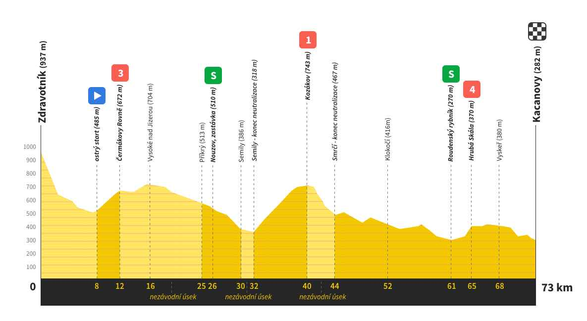

Zvonový > Bystřice (115,9km/2245m)
Poslední etapa letošního ročníku bude skutečnou lahůdkou, která závodníky provede romantickými zákoutími Českého Ráje. Dejme ale slovo odborníkovi a velkému fanouškovi G tour Martinu Petráskovi, který provedl důkladnou analýzu trati etapy. Díky!
Tak tahle etapa, to budou ale vopravdu neskutečný galeje a je jasný, že takhle ke konci už toho budou mít kluci, všichni ti vlčáci, asi plný kecky. No, ale když se všechno sejde, tak se dá i v těhle podmínkách zaject velkej výkon. No, ale nepředbíhejme. No, etapa začne tak jako na rozjetí, kdy bude v podstatě jasný, že to je takovej klid před bouří. V tý Rokytnici na startu to bude bouřit, že by se to dalo krájet a je jasný, že pokud tam bude zima, tak v tom sjezdu, jak se bude sjíždět z toho kopce, tak to bude na morál. A to budem vlastně pořád před ještě před ostrym startem. Při přejezdu Jizery se to ale už pořádně rozjede, a tam se teprv pozná, kdo na to má, kdo má ty plíce od narození. Tam vlastně čeká celej ten peletón hned na začátku dva výjezdy a bude se teprv vidět, jak si to tam kdo pinká. Dá se čekat, že tam hned někdo odpadne a už v tom sjezdu do Semil se vytvoří to silný čelo závodu a za nima bude zajímavý sledovat to hejno pronásledovatelů, který teda ale budou mít ten jazyk až, no ani nevím kde. Vlastně hned vod Semil se tam do toho bude rubat neskutečným způsobem a ukáže se, kdo na to má. Myslím, že ty mladý vlčáci se tam asi budou chtít trochu předvíst na těch prémiích - přece jenom bejt vidět v těch médiích je velký lákadlo. Von ten výjezd na tu Kozinu, to je taková ikona mezi těmi vlčáky, v hantýrce se tomu říká pěknej kundál. Tam když má člověk formu, tak to se sice dá vyject i na železe, ale přece jenom si myslím, že tam bude rozhodující ta taktika a ty zkušenosti, který těm mladejm ranařům přece jen trochu scházej. No, ten výjezd do bude opravdu neskutečnej náraz na realitu a ukáže se, kdo na to má tu sílu a energii a kdo se tam zakyselí. No, zajímavej a určitě důležitej úsek pak bude ten sjezd, kdy vlastně borci sjedou tu Kozinu jako po másle až vlastně před ty skály tam dole. Tam bude nesmírně důležitý si navzájem vypomoct v tý skupině, protože ject tam sám ten celej úsek to je fakt nesmírně náročný a jestli se za někým takhle zformuje skupina, tak si ho smlsnou jak malinu. Ten vjezd do skal bude poslední takovej brutální zalamovák tam, že ty síly budou odcházet strašně rychle - to kdo nezažil, tak neví, vo čem je tady řeč. Tady pak začíná ten rizikovej koridor, kde vám může dojít během pěti vteřin - to jen vopravdu sleduješ ty kilometry a zároveň se soustředíš na to, kdy rupneš. Tady se ukáže, kdo se třeba dobře najed, nebo, kdo ten řetěz dobře namazal. V tý technický pasáži na Vyskeř to pak bude taková pinkačka, že i zezadu to dokážeš sjet, třeba i o pár minut když už na to přijde. Ten úplnej závěr bude ale fakt na sílu a tady se myslím ukáže, že je dobrý bejt dobrej sprinter s tou vytrvalostí na pět hodin. Jakmile si tam vytvoříš ten rozhodující náskok, tak už to člověk nepustí - to pódium tam je tak blízko, ale i tak se může stát, že na něj těch vlčáků bude pořád dost. V tom finiši před Kacanovama bude hrozně důležitej ten přechod z toho výjezdu - tam kdo ztvrdne, tak tam skutečně už bude muset vyvěsit asi bílou vlajku. Tam to pak totiž bude už jen pár těch zatáček a v tom finálním sjezdu s tím nic moc neuděláš. No, ale je asi ošemetný odhadovat, jak se ta etapa bude vyvíjet, ale je jasný, že tam bude víc kohoutů na jednom smetišti. Každopádně to budou ty brejličky, sluníčko, G tour - myslím, že přesně proto to rádi děláme. Myslím, že někdo si pak dá rád i to pivečko v tom cíli, no.
